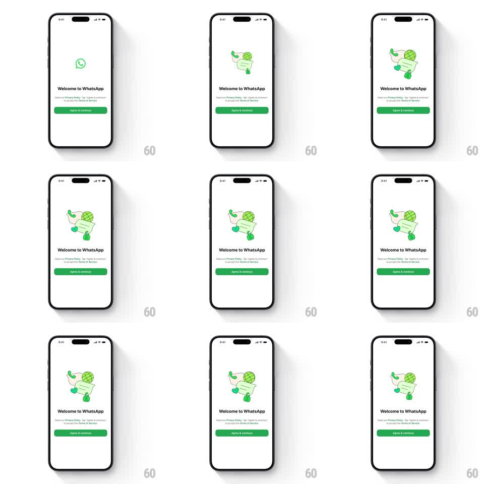

Media
Frame-by-frame

Rebuild this animation 1:1: WhatsApp's welcome screen - the brand glyph (phone-in-speech-bubble) elegantly morphs into a detailed line-art illustration of a chat scene (bubbles, globe, hearts, phone), then back, on a slow seamless loop above the "Welcome to WhatsApp" copy.

Rebuild this animation 1:1: WhatsApp's welcome screen - the brand glyph (phone-in-speech-bubble) elegantly morphs into a detailed line-art illustration of a chat scene (bubbles, globe, hearts, phone), then back, on a slow seamless loop above the "Welcome to WhatsApp" copy. ## Integration Integration: stack-agnostic spec - springs given as stiffness/damping, timed motions as duration + curve; map every value to your framework and animation library of choice. ## Scene White welcome screen: illustration stage upper-middle, "Welcome to WhatsApp" headline, privacy subline, green "Agree & continue" button. The stage alternates between two states: the simple green WhatsApp glyph, and a light-green doodle scene (speech bubbles, globe, hearts, handset) drawn in the same line weight. ## Motion spec Pattern: looping morph, ~8s full cycle. - Hold the glyph ~2s. Then the glyph's strokes extend and branch: the bubble outline grows sub-elements, the handset arcs out, and doodle details draw on (stroke-dash draw-on effect, ~2s, ease-in-out). - Hold the full illustration ~2.5s with a barely-there float (translateY +-2px, 3s). - Reverse morph back to the glyph (~1.5s) - strokes retract in reverse order. - Stroke color stays WhatsApp green throughout; line weight constant (the two states must share a stroke vocabulary). - Copy and button are static. ## Calibration - The morph is a stroke journey, not a crossfade: lines visibly grow into the illustration. - Draw-on order: container shapes first, interior details last. ## Reduced motion Slow crossfade between the two states (500ms), holds unchanged. ## Don't miss - Same line weight in both states - that's what makes the morph believable. - The illustration is tinted (light green fills at ~20% opacity), the glyph is solid.